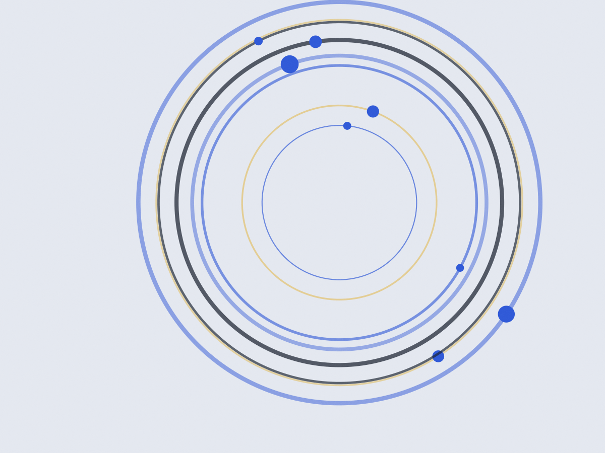

Tatuapé · segunda a sábado
Avaliação de 12 medidas antes da primeira série
Atendo uma pessoa por vez, das 6h às 21h, na academia da Rua Serra de Bragança. A sessão dura 60 minutos e custa R$ 110; a ficha vale 12 semanas e volta à mesa a cada quatro.
Sem plano de emagrecimento pronto. Sem contrato de fidelidade. Sem turma.
As doze semanas, bloco por bloco
RPE é o esforço percebido de 1 a 10. RPE 6 quer dizer que sobrariam quatro repetições naquela série; RPE 9, uma.
- 01Acumulação3x8 · RPE 6
- 02Acumulação3x8 · RPE 6
- 03Acumulação4x8 · RPE 7
- 04Revisão4x8 · RPE 7
- 05Intensificação5x6 · RPE 8
- 06Intensificação5x6 · RPE 8
- 07Intensificação4x5 · RPE 8
- 08Revisão4x5 · RPE 9
- 09Força alta6x4 · RPE 9
- 10Força alta6x4 · RPE 9
- 11Pico3x3 · RPE 9
- 12Descarga2x5 · RPE 5
O que muda no meio do caminho
- Dor aguda em tendão ou articulação tira o exercício da semana, não a semana do treino.
- Viagem de trabalho: a ficha vira versão de hotel, com elástico e peso do corpo.
- Prova de rua marcada? O bloco de força recua uma casa nas duas semanas antes.
Ficha impressa sai na avaliação. A mesma planilha fica no aplicativo, para o dia que não fecha com a minha agenda.
O que cabe na sessão
Quem já passou pela avaliação
Cheguei com dor no joelho direito e ordem médica de parar de correr. Cinco meses depois voltei a correr 8 km sem dor, e o agachamento saiu de 40 para 75 kg. Marta Kobayashi, 41 anos, corredora amadora. Aluna desde março de 2022.
Eu desistia sempre na terceira semana. Aqui a revisão a cada quatro me dá uma meta curta, e o Rafael remarca a sessão que eu perco por plantão. Diego Alencastro, 33 anos, analista de sistemas. Aluno desde 2023.
Treinei dois anos sozinha sem sair do lugar. O que mudou foi ter ficha escrita: eu sei o que fazer na segunda, na quarta e na sexta. Sueli Tanaka, 52 anos, professora. Aluna desde 2021.
Onde treinar e como começar
Academia Estação Tatuapé
Rua Serra de Bragança, 1.180 — Tatuapé, São Paulo. Seiscentos metros do metrô Carrão, com estacionamento no prédio.
- Segunda a sexta
- 6h às 21h
- Sábado
- 7h às 12h
- Domingo
- fechado
Três passos até a primeira sessão
-
Mensagem com o histórico
Conte lesão antiga, cirurgia, remédio de uso contínuo e quantos dias por semana você consegue treinar. Respondo no mesmo dia.
-
Avaliação em um horário livre
Quarenta minutos, R$ 90. Saímos com as 12 medidas no papel e o vídeo do seu agachamento no celular.
-
Primeira semana impressa
Você leva a ficha da semana 1 e o calendário das 12. A primeira sessão já é treino, não conversa.